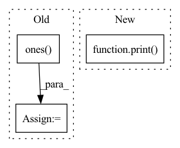

Pattern ID :755

Before Change
self.Pt = Pt/self.Nh
self.fc1 = Pt/self.Nh
x_flat = np.ones((1,1,Nl,Nc))
x_flat = torch.Tensor(x_flat)
x_flat = x_flat.float()
x_flat = x_flat.to(self.H.device)
(b,c,h,w) = x_flat.size()
if Stat_comp:
m_flat = torch.matmul(x_flat,self.H2)
else :
After Change
// Pinv = torch.from_numpy(Pinv)
//else:
if Stat_comp:
print("Statistic completion")
Pinv = torch.pinverse(self.H2, rcond=alpha)
else:
Pinv = torch.pinverse(self.H, rcond=alpha)
Pinv = Pinv.float()
In pattern: SUPERPATTERN
Frequency: 3
Non-data size: 3
Instances
Fragment ID: 2543542
Project Name: openspyrit/spyrit
Commit Name: c765ffa67ce6930782e3ae1be7517a692de8a7be
Time: 2021-11-23
Author: sebastien.crombez@univ-lyon1.fr
File Name: spyrit/learning/model_Had_1D_DCAN.py
Class Name: compNet_1D_size_stat
Method Name: __init__
Parent Class: nn.Module
Fragment ID: 2543539
Project Name: zhangming8/yolox-pytorch
Commit Name: e162fc0465b1f5d8b3211cdc81fd8eabb6dd55c7
Time: 2021-07-26
Author: zhangming8@github.com
File Name: models/losses/yolox_loss.py
Class Name: YOLOXLoss
Method Name: __init__
Parent Class: nn.Module
Fragment ID: 2543552
Project Name: antofuller/configaformers
Commit Name: 587753fa0f50da143bb3a3ad4da1d65e3ee72c60
Time: 2021-11-11
Author: afuller187187@gmail.com
File Name: norm_module.py
Class Name: Gate
Method Name: __init__
Parent Class: nn.Module